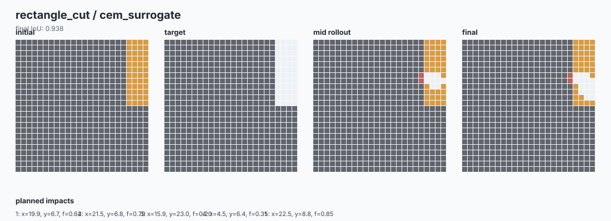
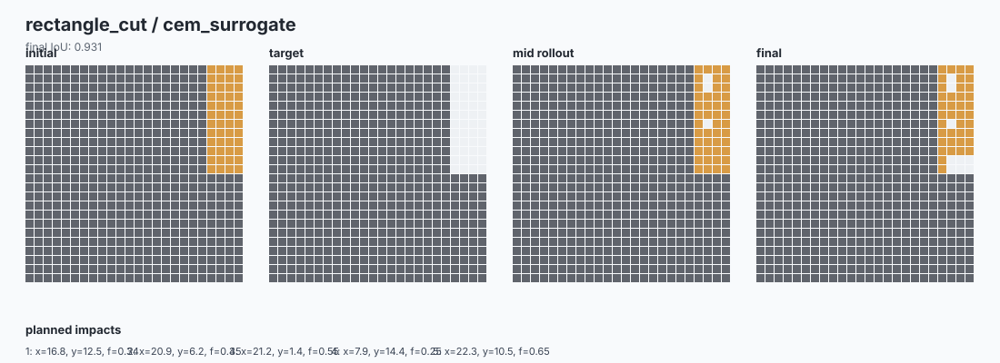
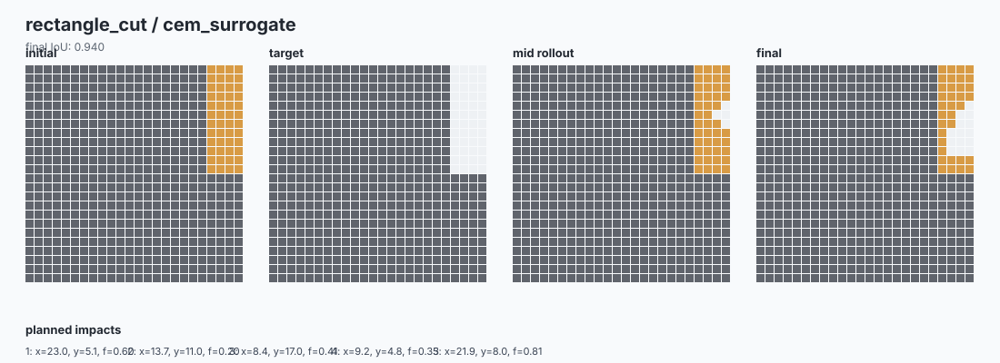
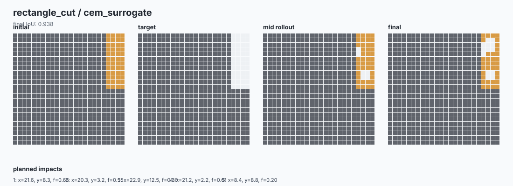
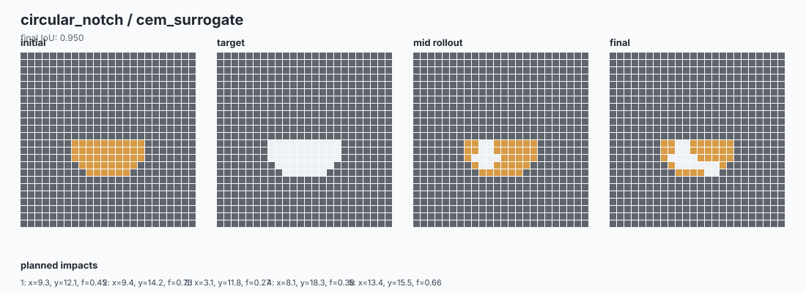
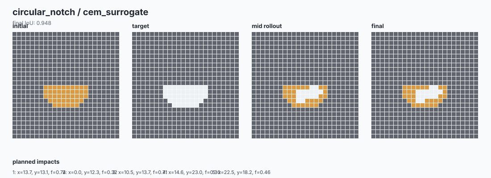
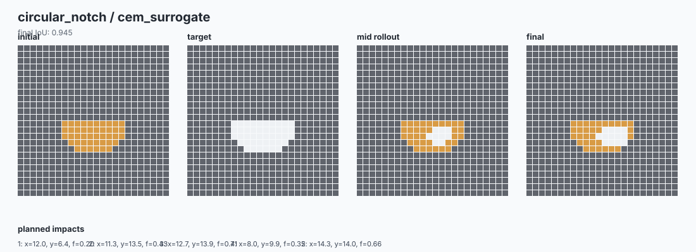
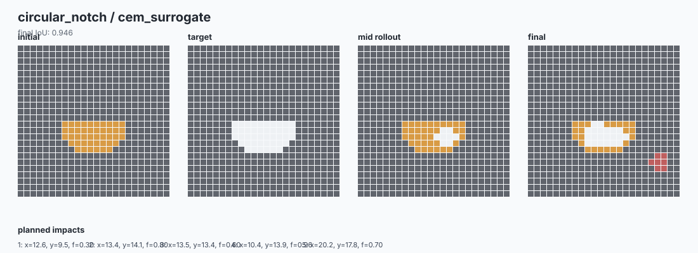

FractureGraph-Control
Compact 2D fracture-control prototype with graph data, learned surrogate hooks, CEM planning, and rollout diagnostics.
| target | method | runs | mean_final_iou | best_final_iou | mean_score | mean_force | mean_undercut | mean_overbreak |
|---|---|---|---|---|---|---|---|---|
| circular_notch | cem_surrogate | 4 | 0.9473 | 0.95 | 0.935 | 0.5342 | 0.6307 | 0.0033 |
| rectangle_cut | cem_surrogate | 4 | 0.9365 | 0.9395 | 0.9264 | 0.4851 | 0.7344 | 0.0009 |







